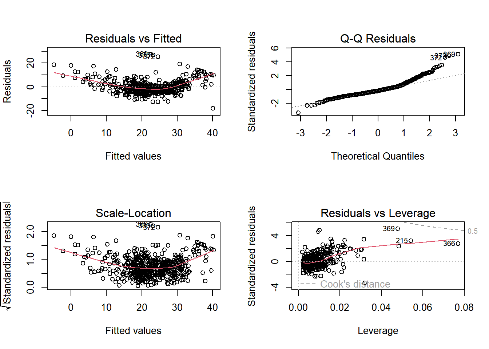
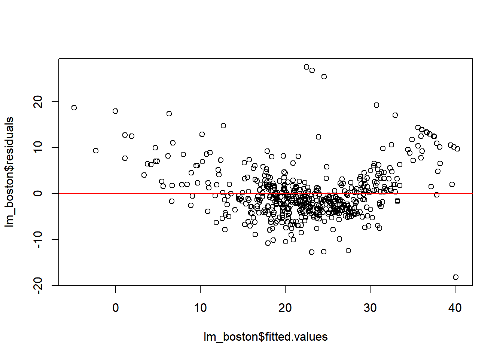
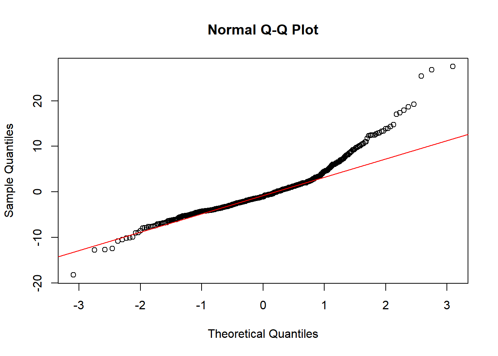

The Boston dataset from the MASS package includes housing data from the Boston area, with variables such as crime rate, tax rates, and median home values.
Key variables: - crim: Crime rate per capita by town. - zn: Proportion of residential land zoned for large lots. - indus: Proportion of non-retail business acres per town. - chas: Charles River dummy variable (1 if tract bounds river; 0 otherwise). - nox: Nitrogen oxides concentration. - rm: Average number of rooms per dwelling. - age: Proportion of owner-occupied units built before 1940. - dis: Distances to Boston employment centers. - rad: Index of accessibility to radial highways. - tax: Property tax rate per $10,000. - ptratio: Pupil-teacher ratio by town. - black: 1000(Bk - 0.63)^2 where Bk is the proportion of Black residents by town. - lstat: Percentage of lower status population. - medv: Median value of owner-occupied homes in $1000s.
Code
# Load necessary packages and data# install.packages("MASS")library(MASS)data("Boston")# Display the first few rows of the datasethead(Boston)
crim zn indus chas
Min. : 0.00632 Min. : 0.00 Min. : 0.46 Min. :0.00000
1st Qu.: 0.08205 1st Qu.: 0.00 1st Qu.: 5.19 1st Qu.:0.00000
Median : 0.25651 Median : 0.00 Median : 9.69 Median :0.00000
Mean : 3.61352 Mean : 11.36 Mean :11.14 Mean :0.06917
3rd Qu.: 3.67708 3rd Qu.: 12.50 3rd Qu.:18.10 3rd Qu.:0.00000
Max. :88.97620 Max. :100.00 Max. :27.74 Max. :1.00000
nox rm age dis
Min. :0.3850 Min. :3.561 Min. : 2.90 Min. : 1.130
1st Qu.:0.4490 1st Qu.:5.886 1st Qu.: 45.02 1st Qu.: 2.100
Median :0.5380 Median :6.208 Median : 77.50 Median : 3.207
Mean :0.5547 Mean :6.285 Mean : 68.57 Mean : 3.795
3rd Qu.:0.6240 3rd Qu.:6.623 3rd Qu.: 94.08 3rd Qu.: 5.188
Max. :0.8710 Max. :8.780 Max. :100.00 Max. :12.127
rad tax ptratio black
Min. : 1.000 Min. :187.0 Min. :12.60 Min. : 0.32
1st Qu.: 4.000 1st Qu.:279.0 1st Qu.:17.40 1st Qu.:375.38
Median : 5.000 Median :330.0 Median :19.05 Median :391.44
Mean : 9.549 Mean :408.2 Mean :18.46 Mean :356.67
3rd Qu.:24.000 3rd Qu.:666.0 3rd Qu.:20.20 3rd Qu.:396.23
Max. :24.000 Max. :711.0 Max. :22.00 Max. :396.90
lstat medv
Min. : 1.73 Min. : 5.00
1st Qu.: 6.95 1st Qu.:17.02
Median :11.36 Median :21.20
Mean :12.65 Mean :22.53
3rd Qu.:16.95 3rd Qu.:25.00
Max. :37.97 Max. :50.00
Residual Analysis
Purpose and Importance
Residual analysis is a crucial step in regression diagnostics. By examining the residuals (the differences between observed and predicted values), we can identify patterns that might indicate model inadequacies, such as non-linearity, heteroscedasticity, or the presence of outliers.
Example: Residual Plots
Code
# Fitting a linear modellm_boston <-lm(medv ~ lstat + rm + age, data = Boston)# Residual plotspar(mfrow =c(2, 2))plot(lm_boston)

Explanation:
Residuals vs. Fitted: This plot helps detect non-linearity, heteroscedasticity (non-constant variance), and outliers. Ideally, residuals should be randomly scattered around zero.
Normal Q-Q: This plot checks whether the residuals are normally distributed. If the normality assumption holds, the points should be straight.
Scale-Location: Also known as the Spread-Location plot, it checks for homoscedasticity. The residuals should spread equally along the range of fitted values.
Residuals vs. Leverage: This plot helps detect influential observations that might disproportionately affect the model. High leverage points that significantly influence the model will be flagged.
Interpreting Results:
Non-random patterns: In the Residuals vs. Fitted plot, patterns such as a funnel shape suggest heteroscedasticity, while curvature suggests non-linearity.
Outliers or Influential Points: In the Residuals vs. Leverage plot, points with high leverage and large residuals could be influential.
Checking Assumptions
Linearity, Normality, and Homoscedasticity
Linearity: The relationship between predictors and the response variable should be linear.
Normality: The residuals should be normally distributed. The Normal Q-Q plot helps assess this.
Homoscedasticity: The variance of the residuals should be constant across all levels of the predictors.
Linearity and Homoscedasticity
Code
# Checking for linearity and homoscedasticityplot(lm_boston$fitted.values, lm_boston$residuals)abline(h =0, col ="red")

Note
This plot is used to check for linearity and homoscedasticity. Residuals should be randomly scattered around zero without showing any specific pattern.
Normality of Residuals
Code
# Checking for normalityqqnorm(lm_boston$residuals)qqline(lm_boston$residuals, col ="red")

Note
Q-Q Plot: If the points lie on the line, the residuals are normally distributed, which satisfies the normality assumption.
Detecting Multicollinearity with VIF
Multicollinearity occurs when the independent variables in a regression model are highly correlated, leading to unreliable estimates of regression coefficients. The Variance Inflation Factor (VIF) detects multicollinearity.
Calculating VIF
Code
# Load the necessary package# install.packages("car")library(car)
Warning: package 'car' was built under R version 4.5.1
Loading required package: carData
Warning: package 'carData' was built under R version 4.5.1
Code
# Calculate VIFvif(lm_boston)
lstat rm age
2.477304 1.675215 1.638542
Note
VIF: A VIF value above 5 or 10 indicates a high level of multicollinearity, suggesting that the variable may need to be removed or combined with others to reduce redundancy.
Testing for Heteroscedasticity
Heteroscedasticity occurs when the variance of residuals is not constant across all levels of the independent variables. This violates the assumption of homoscedasticity, leading to inefficient estimates.
Breusch-Pagan Test
Code
# Load the necessary package# install.packages("lmtest")library(lmtest)
Loading required package: zoo
Attaching package: 'zoo'
The following objects are masked from 'package:base':
as.Date, as.Date.numeric
Code
# Perform the Breusch-Pagan testbptest(lm_boston)
studentized Breusch-Pagan test
data: lm_boston
BP = 19.771, df = 3, p-value = 0.0001894
Note
Breusch-Pagan Test: This test checks for heteroscedasticity in the model. A significant p-value (typically < 0.05) suggests the presence of heteroscedasticity.
Model Evaluation
Model evaluation assesses how well your regression model fits the data and how well it is likely to perform on new data.
Metrics for Model Evaluation:
R-squared: Measures the proportion of the variance in the dependent variable that is predictable from the independent variables.
Adjusted R-squared: Adjusts R-squared for the number of predictors, providing a more accurate measure for models with multiple predictors.
AIC (Akaike Information Criterion): Balances model fit and complexity. Lower AIC values indicate a better model.
Comparing Models
Code
# Model with additional predictorslm_boston_full <-lm(medv ~ lstat + rm + age + dis + tax, data = Boston)# R-squared comparisonsummary(lm_boston)$r.squared
R-squared and Adjusted R-squared: These metrics help assess the explanatory power of your model. Adjusted R-squared is particularly useful when comparing models with different numbers of predictors.
AIC: This criterion helps balance the trade-off between model complexity and goodness of fit. A lower AIC value indicates a model that better fits the data while avoiding overfitting.
Note
Model Preference: A model with a higher Adjusted R-squared and lower AIC is typically preferred, but it’s also important to consider the predictors’ practical significance and the risk of overfitting.
Exercises
Dataset: diamonds dataset from the ggplot2 Package
The diamonds dataset from the ggplot2 package contains data on 53,940 diamonds, with attributes that can be used to explore relationships between price, quality, and physical dimensions.
Key Variable Descriptions:
carat: Weight of the diamond (continuous variable).
cut: Quality of the cut, categorized as Fair, Good, Very Good, Premium, and Ideal (ordered factor).
color: Diamond color, with grades from D (best) to J (worst) (ordered factor).
clarity: Clarity of the diamond, ranging from I1 (worst) to IF (best) (ordered factor).
depth: Total depth percentage, which is the height of a diamond divided by its average diameter (continuous variable).
table: Width of the diamond’s table expressed as a percentage of its diameter (continuous variable).
price: Price of the diamond in US dollars (continuous variable).
Code
# Load the necessary packagelibrary(ggplot2)data("diamonds")head(diamonds)
# A tibble: 6 × 10
carat cut color clarity depth table price x y z
<dbl> <ord> <ord> <ord> <dbl> <dbl> <int> <dbl> <dbl> <dbl>
1 0.23 Ideal E SI2 61.5 55 326 3.95 3.98 2.43
2 0.21 Premium E SI1 59.8 61 326 3.89 3.84 2.31
3 0.23 Good E VS1 56.9 65 327 4.05 4.07 2.31
4 0.29 Premium I VS2 62.4 58 334 4.2 4.23 2.63
5 0.31 Good J SI2 63.3 58 335 4.34 4.35 2.75
6 0.24 Very Good J VVS2 62.8 57 336 3.94 3.96 2.48
Choose a dependent variable (Y) and at least two independent variables (X1, X2, …). Fit a multiple linear regression model.
Selecting Variables and Fitting a Regression Model
Q1
Use the lm() function to create a multiple linear regression model.
Display the summary of the model to interpret the coefficients, R-squared, and p-values.
Code
# Example (students should choose their own variables):# Dependent variable: price# Independent variables: carat, cut, colormodel <-lm(price ~ carat + cut + color, data = diamonds)# Display the model summarysummary(model)
# Install the lmtest package if not already installed# install.packages("lmtest")library(lmtest)# Breusch-Pagan test for heteroscedasticitybp_test <-bptest(model)bp_test
studentized Breusch-Pagan test
data: model
BP = 8859.1, df = 11, p-value < 2.2e-16
Model Comparison and Evaluation
Q4
Fit an alternative model with a different set of independent variables.
Compare the models based on Adjusted R-squared and AIC to determine which model is better.
Code
# Alternative model with different independent variablesmodel2 <-lm(price ~ carat + clarity + depth, data = diamonds)# Compare R-squared and Adjusted R-squaredsummary(model)$adj.r.squared
[1] 0.8711236
Code
summary(model2)$adj.r.squared
[1] 0.895255
Code
# Compare AICAIC(model)
[1] 937048.2
Code
AIC(model2)
[1] 925863.1
Wrapping up
In this session, we’ve explored essential concepts in regression diagnostics and model evaluation, including residual analysis, checking assumptions, identifying influential points, and model comparison using R-squared and AIC.
Practice these techniques with different datasets to better understand and improve your analytical skills.
---title: "EPPS Math Coding Camp"subtitle: "Regression Diagnostics and Model Evaluation"instructor: "Dongeun Kim"date: "August 19, 2025"format: html: toc: true toc-depth: 3 code-fold: show code-tools: true highlight-style: github---Instructor: `r rmarkdown::metadata$instructor````{r setup, include=FALSE}knitr::opts_chunk$set(echo = TRUE)```# Regression Diagnostics and Model Evaluation## Introduction and Data Overview### Dataset: Boston from the MASS PackageThe Boston dataset from the MASS package includes housing data from the Boston area, with variables such as crime rate, tax rates, and median home values. <br>**Key variables:**<br>- **crim**: Crime rate per capita by town.<br>- **zn**: Proportion of residential land zoned for large lots.<br>- **indus**: Proportion of non-retail business acres per town.<br>- **chas**: Charles River dummy variable (1 if tract bounds river; 0 otherwise).<br>- **nox**: Nitrogen oxides concentration.<br>- **rm**: Average number of rooms per dwelling.<br>- **age**: Proportion of owner-occupied units built before 1940.<br>- **dis**: Distances to Boston employment centers.<br>- **rad**: Index of accessibility to radial highways.<br>- **tax**: Property tax rate per $10,000.<br>- **ptratio**: Pupil-teacher ratio by town.<br>- **black**: 1000(Bk - 0.63)^2 where Bk is the proportion of Black residents by town.<br>- **lstat**: Percentage of lower status population.<br>- **medv**: Median value of owner-occupied homes in $1000s.<br><br>```{r}# Load necessary packages and data# install.packages("MASS")library(MASS)data("Boston")# Display the first few rows of the datasethead(Boston)summary(Boston)```<br>## Residual Analysis### Purpose and ImportanceResidual analysis is a crucial step in regression diagnostics. By examining the residuals (the differences between observed and predicted values), we can identify patterns that might indicate model inadequacies, such as non-linearity, heteroscedasticity, or the presence of outliers.<br><br>### Example: Residual Plots```{r}# Fitting a linear modellm_boston <-lm(medv ~ lstat + rm + age, data = Boston)# Residual plotspar(mfrow =c(2, 2))plot(lm_boston)```<br>#### Explanation:- **Residuals vs. Fitted**: This plot helps detect non-linearity, heteroscedasticity (non-constant variance), and outliers. Ideally, residuals should be randomly scattered around zero.- **Normal Q-Q**: This plot checks whether the residuals are normally distributed. If the normality assumption holds, the points should be straight.- **Scale-Location**: Also known as the Spread-Location plot, it checks for homoscedasticity. The residuals should spread equally along the range of fitted values.- **Residuals vs. Leverage**: This plot helps detect influential observations that might disproportionately affect the model. High leverage points that significantly influence the model will be flagged.<br>#### Interpreting Results:- **Non-random patterns**: In the Residuals vs. Fitted plot, patterns such as a funnel shape suggest heteroscedasticity, while curvature suggests non-linearity.<br>- **Outliers or Influential Points**: In the Residuals vs. Leverage plot, points with high leverage and large residuals could be influential.<br><br>## Checking Assumptions### Linearity, Normality, and Homoscedasticity**Linearity**:<br>The relationship between predictors and the response variable should be linear.<br><br>**Normality**:<br>The residuals should be normally distributed. The Normal Q-Q plot helps assess this.<br><br>**Homoscedasticity**:<br>The variance of the residuals should be constant across all levels of the predictors.<br><br>#### Linearity and Homoscedasticity```{r}# Checking for linearity and homoscedasticityplot(lm_boston$fitted.values, lm_boston$residuals)abline(h =0, col ="red")```::: callout-noteThis plot is used to check for linearity and homoscedasticity. Residuals should be randomly scattered around zero without showing any specific pattern.:::#### Normality of Residuals```{r}# Checking for normalityqqnorm(lm_boston$residuals)qqline(lm_boston$residuals, col ="red")```::: callout-noteQ-Q Plot: If the points lie on the line, the residuals are normally distributed, which satisfies the normality assumption.:::## Detecting Multicollinearity with VIFMulticollinearity occurs when the independent variables in a regression model are highly correlated, leading to unreliable estimates of regression coefficients. The Variance Inflation Factor (VIF) detects multicollinearity.### Calculating VIF```{r}# Load the necessary package# install.packages("car")library(car)# Calculate VIFvif(lm_boston)```::: callout-note**VIF**: A VIF value above 5 or 10 indicates a high level of multicollinearity, suggesting that the variable may need to be removed or combined with others to reduce redundancy.:::## Testing for HeteroscedasticityHeteroscedasticity occurs when the variance of residuals is not constant across all levels of the independent variables. This violates the assumption of homoscedasticity, leading to inefficient estimates.### Breusch-Pagan Test```{r}# Load the necessary package# install.packages("lmtest")library(lmtest)# Perform the Breusch-Pagan testbptest(lm_boston)```::: callout-note**Breusch-Pagan Test**: This test checks for heteroscedasticity in the model. A significant p-value (typically < 0.05) suggests the presence of heteroscedasticity.:::## Model EvaluationModel evaluation assesses how well your regression model fits the data and how well it is likely to perform on new data.### Metrics for Model Evaluation:- **R-squared**: Measures the proportion of the variance in the dependent variable that is predictable from the independent variables.- **Adjusted R-squared**: Adjusts R-squared for the number of predictors, providing a more accurate measure for models with multiple predictors.- **AIC (Akaike Information Criterion)**: Balances model fit and complexity. Lower AIC values indicate a better model.#### Comparing Models```{r}# Model with additional predictorslm_boston_full <-lm(medv ~ lstat + rm + age + dis + tax, data = Boston)# R-squared comparisonsummary(lm_boston)$r.squaredsummary(lm_boston_full)$r.squared# Adjusted R-squared comparisonsummary(lm_boston)$adj.r.squaredsummary(lm_boston_full)$adj.r.squared# AIC comparisonAIC(lm_boston)AIC(lm_boston_full)```- **R-squared and Adjusted R-squared**: These metrics help assess the explanatory power of your model. Adjusted R-squared is particularly useful when comparing models with different numbers of predictors. <br>- **AIC**: This criterion helps balance the trade-off between model complexity and goodness of fit. A lower AIC value indicates a model that better fits the data while avoiding overfitting. <br>::: callout-noteModel Preference: A model with a higher Adjusted R-squared and lower AIC is typically preferred, but it’s also important to consider the predictors' practical significance and the risk of overfitting.:::# Exercises## Dataset: diamonds dataset from the ggplot2 PackageThe diamonds dataset from the ggplot2 package contains data on 53,940 diamonds, with attributes that can be used to explore relationships between price, quality, and physical dimensions.#### Key Variable Descriptions:- **carat**: Weight of the diamond (continuous variable).- **cut**: Quality of the cut, categorized as Fair, Good, Very Good, Premium, and Ideal (ordered factor).- **color**: Diamond color, with grades from D (best) to J (worst) (ordered factor).- **clarity**: Clarity of the diamond, ranging from I1 (worst) to IF (best) (ordered factor).- **depth**: Total depth percentage, which is the height of a diamond divided by its average diameter (continuous variable).- **table**: Width of the diamond's table expressed as a percentage of its diameter (continuous variable).- **price**: Price of the diamond in US dollars (continuous variable).```{r}# Load the necessary packagelibrary(ggplot2)data("diamonds")head(diamonds)```Choose a dependent variable (Y) and at least two independent variables (X1, X2, ...). Fit a multiple linear regression model.## Selecting Variables and Fitting a Regression Model#### Q11) Use the lm() function to create a multiple linear regression model. <br>2) Display the summary of the model to interpret the coefficients, R-squared, and p-values. <br>```{r}# Example (students should choose their own variables):# Dependent variable: price# Independent variables: carat, cut, colormodel <-lm(price ~ carat + cut + color, data = diamonds)# Display the model summarysummary(model)```## Residual Analysis#### Q21) Create residual plots to check for linearity, homoscedasticity, and normality. <br>2) Use the par() function to display multiple plots at once. <br>```{r}# Residual analysispar(mfrow =c(2, 2))plot(model)```## Checking for Multicollinearity and Heteroscedasticity#### Q31) Calculate VIF for each independent variable in your model. <br>2) Use the bptest() function from the lmtest package to test for heteroscedasticity. <br>3) Interpret the results of the test.```{r}# Install the car package if not already installed# install.packages("car")library(car)# Calculate VIFvif_values <-vif(model)vif_values``````{r}# Install the lmtest package if not already installed# install.packages("lmtest")library(lmtest)# Breusch-Pagan test for heteroscedasticitybp_test <-bptest(model)bp_test```## Model Comparison and Evaluation#### Q41) Fit an alternative model with a different set of independent variables. <br>2) Compare the models based on Adjusted R-squared and AIC to determine which model is better. <br>```{r}# Alternative model with different independent variablesmodel2 <-lm(price ~ carat + clarity + depth, data = diamonds)# Compare R-squared and Adjusted R-squaredsummary(model)$adj.r.squaredsummary(model2)$adj.r.squared# Compare AICAIC(model)AIC(model2)```# Wrapping upIn this session, we've explored essential concepts in regression diagnostics and model evaluation, including residual analysis, checking assumptions, identifying influential points, and model comparison using R-squared and AIC.<br><br>Practice these techniques with different datasets to better understand and improve your analytical skills. <br><br>### Reference- [data programming with R](https://datageneration.io/dataprogrammingwithr/intro)- Chicago Harris School Coding Camp- [The U.S. government's open data portal](https://data.gov/)- [MASS Package](https://cran.r-project.org/web/packages/MASS/MASS.pdf)- [Tidyverse Diamonds](https://ggplot2.tidyverse.org/reference/diamonds.html)